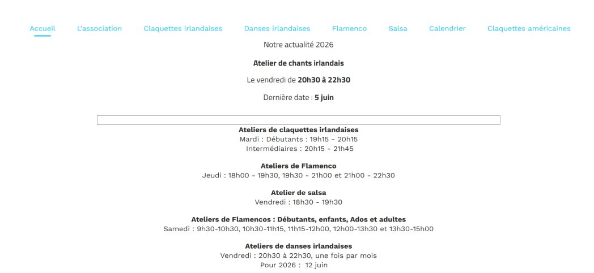
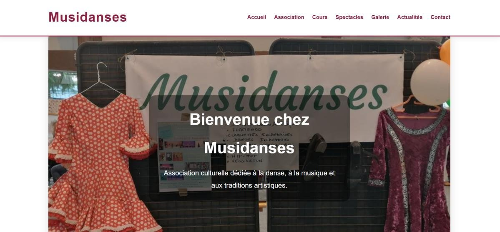
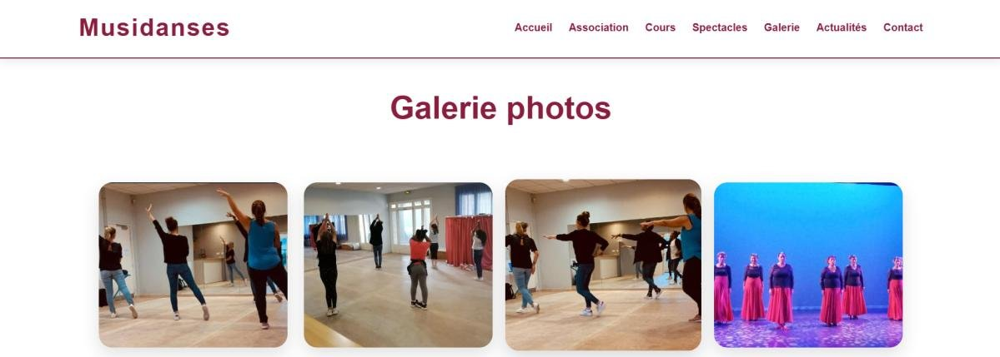

Musidanses – Refonte du site Internet
L'entreprise
Musidanses est une association qui fait découvrir la danse et la musique aux enfants, aux ados et aux adultes : flamenco, salsa, claquettes irlandaises et américaines, danses irlandaises. Ses cours et spectacles ont lieu à la salle La Roue de Chilly-Mazarin.
Ma mission
Son site Internet était devenu vieillissant. Mon tuteur m'a confié la création d'une nouvelle version, plus moderne, plus claire et plus simple à maintenir, en gardant toutes les informations importantes.
Ce que j'ai réalisé
- Analyse de l'ancien site et des informations à conserver
- Nouvelle structure : Accueil, Association, Cours, Spectacles, Galerie, Actualités, Contact
- Menu de navigation et boutons qui mènent directement à chaque discipline
- Galerie photos en grille avec effet au survol et bouton « Voir plus »
- Mise en forme en CSS3 et adaptation aux mobiles et tablettes
- Tests sur plusieurs navigateurs et tailles d'écran
Compétences développées
Analyser le besoin d'un client, organiser un projet web, tenir compte des retours de mon tuteur, corriger les erreurs d'affichage et chercher des solutions en autonomie.
Télécharger le rapport de stage


